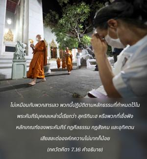
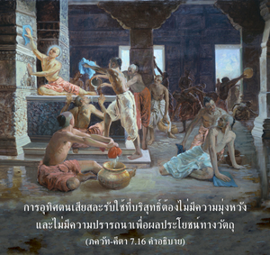

โอ้ ผู้ยอดเยี่ยมในหมู่ ภารต มนุษย์ผู้มีบุญสี่ประเภทเริ่มถวายการอุทิศตนเสียสละรับใช้ต่อข้า คือ ผู้ที่มีความทุกข์ ผู้ที่ปรารถนาความร่ำรวย ผู้ที่ชอบถาม และผู้ที่แสวงหาความรู้แห่งสัจธรรม


ไม่เหมือนกับพวกสารเลว พวกนี้จะปฏิบัติตามหลักธรรมที่กำหนดไว้ในพระคัมภีร์บุคคลเหล่านี้เรียกว่า สุ-กฺฤตินห์ หรือพวกที่เชื่อฟังหลักเกณฑ์ของพระคัมภีร์ กฎศีลธรรม กฎสังคม และอุทิศตนเสียสละต่อองค์ภควานฺไม่มากก็น้อย มีอยู่สี่ประเภท คือ พวกที่บางครั้งมีความทุกข์ พวกที่ต้องการเงินทอง พวกที่บางครั้งชอบถาม และพวกที่บางครั้งแสวงหาความรู้แห่งสัจธรรม บุคคลเหล่านี้มาหาองค์ภควานฺเพื่อการอุทิศตนเสียสละรับใช้ภายใต้สภาวะที่ต่างกัน แบบนี้ยังไม่ได้ถือว่าเป็นสาวกผู้บริสุทธิ์เลยทีเดียว เพราะยังมีความปรารถนาบางประการที่ต้องสนองตอบในการแลกเปลี่ยนกับการอุทิศตนเสียสละรับใช้ การอุทิศตนเสียสละรับใช้ที่บริสุทธิ์ต้องไม่มีความมุ่งหวัง และไม่มีความปรารถนาเพื่อผลประโยชน์ทางวัตถุ ภกฺติ-รสามฺฤต-สินฺธุ (1.1.11) นิยามการอุทิศตนเสียสละที่บริสุทธิ์ไว้ดังนี้
อนฺยาภิลาษิตา-ศูนฺยํ
ชฺญาน-กรฺมาทฺยฺ-อนาวฺฤตมฺ
อานุกูเลฺยน กฺฤษฺณานุ
ศีลนํ ภกฺติรฺ อุตฺตมา
“เราควรถวายการรับใช้ทิพย์ด้วยความรักต่อองค์ภควานฺ ศฺรีกฺฤษฺณ ในเชิงบวก โดยไม่ปรารถนาผลประโยชน์ หรือผลกำไรทางวัตถุผ่านทางกิจกรรมทางวัตถุ หรือผ่านทางการคาดคะเนทางปรัชญา เช่นนี้จึงจะเรียกว่าการอุทิศตนเสียสละรับใช้ที่บริสุทธิ์”
เมื่อบุคคลสี่ประเภทนี้มาหาองค์ภควานฺเพื่อการอุทิศตนเสียสละรับใช้ และบริสุทธิ์ขึ้นอย่างสมบูรณ์ ด้วยการมาคบหาสมาคมกับสาวกผู้บริสุทธิ์พวกเขาจะกลายเป็นสาวกผู้บริสุทธิ์เช่นเดียวกัน สำหรับพวกสารเลวการอุทิศตนเสียสละรับใช้เป็นสิ่งที่ยากมาก เพราะเป็นชีวิตที่เห็นแก่ตัว ไร้วินัย และไม่มีจุดมุ่งหมายทิพย์ แต่จะมีบางคนที่มีโอกาสมาสัมผัสกับสาวกผู้บริสุทธิ์ก็จะกลายเป็นสาวกผู้บริสุทธิ์ได้เช่นเดียวกัน
พวกที่มีภารกิจยุ่งยากอยู่กับกิจกรรมเพื่อผลประโยชน์ทางวัตถุเสมอไปหาองค์ภควานฺด้วยความทุกข์ทางวัตถุ ขณะที่มีความทุกข์ก็ได้ไปคบหาสมาคมกับสาวกผู้บริสุทธิ์ และกลายเป็นสาวกขององค์ภควานฺ พวกที่ไม่สมหวังก็เช่นเดียวกันบางครั้งมาคบหาสมาคมกับสาวกผู้บริสุทธิ์ และอยากรู้เกี่ยวกับองค์ภควานฺ ในลักษณะเดียวกันเมื่อนักปราชญ์ผู้แห้งแล้งไม่สมหวังกับความรู้ในทุกสาขา บางครั้งต้องการเรียนรู้เกี่ยวกับองค์ภควานฺจะมาหาพระองค์ถวายการอุทิศตนเสียสละรับใช้ และข้ามพ้นความรู้ของ พฺรหฺมนฺ อันไร้รูปลักษณ์ ความรู้แห่ง ปรมาตฺมาผู้ประทับในหัวใจของทุกคน และไปถึงแนวคิดแห่งบุคลิกภาพแห่งองค์ภควานฺด้วยพระกรุณาขององค์ภควานฺ หรือสาวกผู้บริสุทธิ์ โดยสรุปคือ เมื่อผู้ที่มีความทุกข์ ผู้ที่ชอบถาม ผู้ที่แสวงหาความรู้ และพวกที่ต้องการเงินทองเป็นอิสระจากความต้องการทางวัตถุทั้งปวง และเมื่อเข้าใจอย่างถ่องแท้ว่าสิ่งตอบแทนทางวัตถุไม่มีความสัมพันธ์ใดๆ กับความเจริญก้าวหน้าในวิถีทิพย์พวกเขาก็กลายเป็นสาวกผู้บริสุทธิ์ ตราบใดที่ระดับแห่งความบริสุทธิ์เช่นนี้ยังบรรลุไม่ถึง สาวกที่อยู่ในการอุทิศตนเสียสละรับใช้ต่อองค์ภควานฺยังแปดเปื้อนไปด้วยกิจกรรม เพื่อผลประโยชน์ทางวัตถุ แสวงหาความรู้ทางโลก เป็นต้น ดังนั้น เราต้องข้ามให้พ้นทั้งหมดนี้ก่อนที่จะมาถึงระดับแห่งการอุทิศตนเสียสละรับใช้ที่บริสุทธิ์